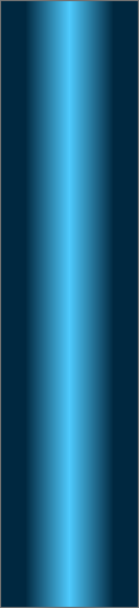
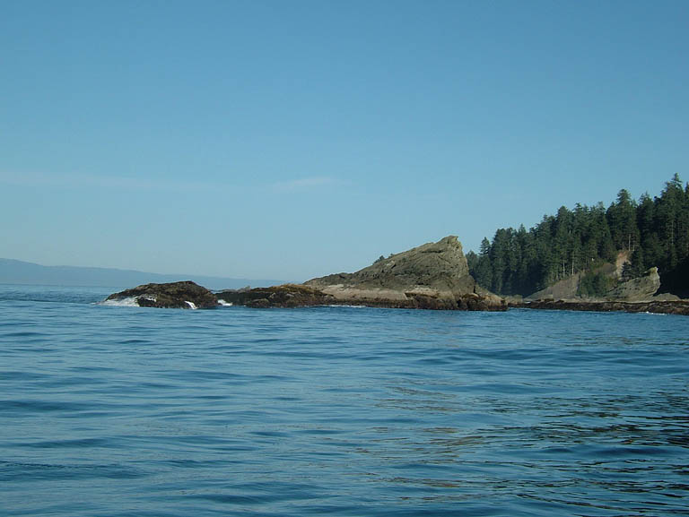
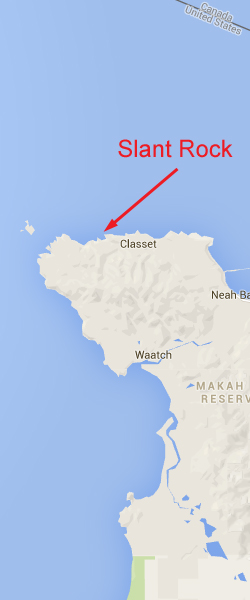
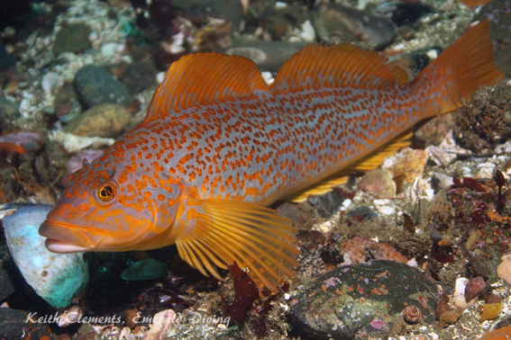
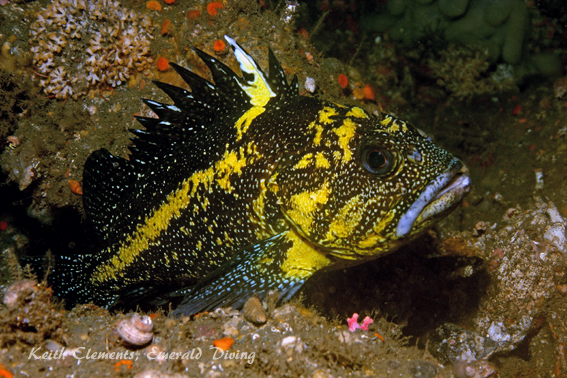
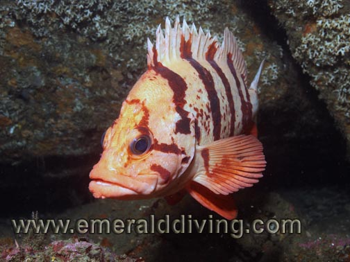
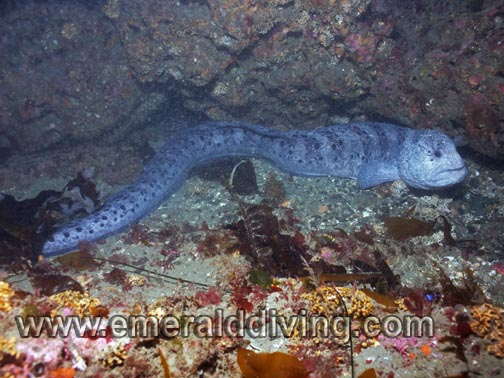
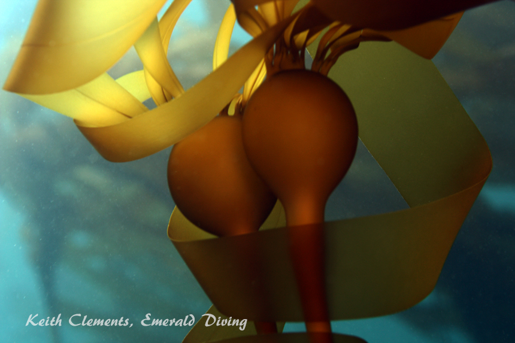
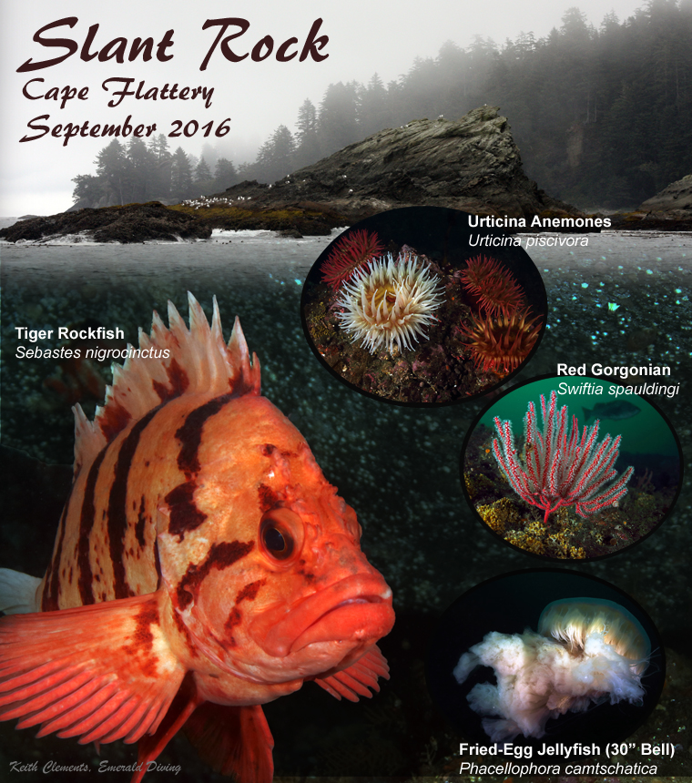
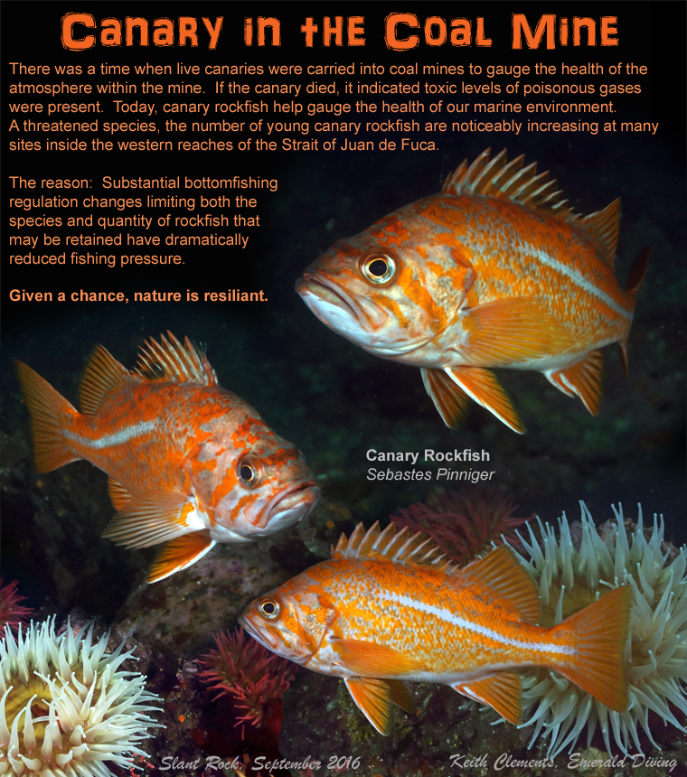

Double click to edit

Slant Rock
Topography: Expansive rock ridges, walls, boulders, and other rock formations.
Cape Flattery marine life rating: 4
Cape Flattery structure rating: 5
Diving depth: 70-90 feet
Highlight: A chance to get up close and personal with canary rockfish and red gorgonian corals.
Skill rating: Advanced
Access by boat: Slant Rock is located along the southern shoreline of the Strait of Juan de Fuca, about a mile away from Mushroom Rock and the tip of Cape Flattery. This distinctively shaped rock earns its name when viewed from the west. I anchor in the semi-protected bay just west of the rock to gear up.
Shore access: None
GPS coordinates: N48° 23.490’ W124° 41.860’
Dive Profile: A lot of structure surrounds Slant Rock. I normally dive a large double-sided ridge that runs from the rock to the west. To get to this ridge, I enter the water inside the bay immediately west of Slant Rock and descend 40-50 feet to a flat rocky substrate covered with kelp. I quickly encounter a large boulder field and rock formations as I head north. I follow the formations to the west until I find myself facing a huge boulder between two massive ridges - one to the west and the other to the east. If the current is a non-factor, I round the boulder and head to the north side of the western ridge. The structure in this area is very rugged and continues down slope to the northwest. If the current is running hard on the north side of the ridge, I opt to head west along the inside of the western ridge. Sometimes the current is running hard on this inside ridge as well - in which case I fall back to the bay and spend my time examining the rock walls on the west side of Slant Rock and the surrounding kelp forest.
The western ridge is over 100 yards long and is over 30 feet tall in places. Small caves and fissures along the wall provide sanctuary for rockfish and other species. The ridge eventually fades into the substrate about 75 yards to the west.
I plan to dive a down and back pattern at this site as I like to avoid free ascents in current intensive waters. My goal is to make it back into the semi-protected bay west of Slant Rock where I can perform my safety stop in current-free water and use a strand of bull kelp as an ascent line. I always keep my finger spool and signal marker buoy handy in case I don’t find my way back to the safety of the bay. I dive this site with a live boat as I do with all sites in this area.
My preferred gas mix for this dive: EAN 36
Current observations:
Current station: Strait of Juan de Fuca (Entrance)
Noted slack corrections: None.
I have not been able to correlate slack current at this site with slack at the Strait of Juan de Fuca entrance. I drift the boat over the ridge prior to the dive to gauge the current. The little bay to the west of Slant Rock doesn’t seem to be subjected to heavy current. I start my dives just inside this bay and cautiously work my way to the ridge. I expect to encounter some current even around predicted slack. If the current is unmanageable, I fall back to the bay.
Boat Launch
Neah Bay Marina boat ramp. Approximately 5 miles from the dive site.
Facilities: None
Hazards:
Current: Current intensity and direction are hard to predict. I have aborted several dives after encountering overwhelming current as I approach the ridge.
Swell: A two to four foot swell is often prevalent. I often note the effects of swell at depths less than 40 feet.
Fishing boats: This is a popular jigging area for bottom fishermen.
Snagging hazards: Discarded fishing line, hooks, and jigs are found throughout this site.
Marine Life: This is a great site to encounter the ever curious canary rockfish. On one dive I was joined by 13 of these colorful fish that followed me around for most of my dive. This site provides excellent habitat for at least seven other species of rockfish, giant Pacific octopus, wolfeels, purple-ring topsnails, and gorgonian corals to name but a few of the more exotic species. Current permitting, this is an awesome dive.
Cape Flattery marine life rating: 4
Cape Flattery structure rating: 5
Diving depth: 70-90 feet
Highlight: A chance to get up close and personal with canary rockfish and red gorgonian corals.
Skill rating: Advanced
Access by boat: Slant Rock is located along the southern shoreline of the Strait of Juan de Fuca, about a mile away from Mushroom Rock and the tip of Cape Flattery. This distinctively shaped rock earns its name when viewed from the west. I anchor in the semi-protected bay just west of the rock to gear up.
Shore access: None
GPS coordinates: N48° 23.490’ W124° 41.860’
Dive Profile: A lot of structure surrounds Slant Rock. I normally dive a large double-sided ridge that runs from the rock to the west. To get to this ridge, I enter the water inside the bay immediately west of Slant Rock and descend 40-50 feet to a flat rocky substrate covered with kelp. I quickly encounter a large boulder field and rock formations as I head north. I follow the formations to the west until I find myself facing a huge boulder between two massive ridges - one to the west and the other to the east. If the current is a non-factor, I round the boulder and head to the north side of the western ridge. The structure in this area is very rugged and continues down slope to the northwest. If the current is running hard on the north side of the ridge, I opt to head west along the inside of the western ridge. Sometimes the current is running hard on this inside ridge as well - in which case I fall back to the bay and spend my time examining the rock walls on the west side of Slant Rock and the surrounding kelp forest.
The western ridge is over 100 yards long and is over 30 feet tall in places. Small caves and fissures along the wall provide sanctuary for rockfish and other species. The ridge eventually fades into the substrate about 75 yards to the west.
I plan to dive a down and back pattern at this site as I like to avoid free ascents in current intensive waters. My goal is to make it back into the semi-protected bay west of Slant Rock where I can perform my safety stop in current-free water and use a strand of bull kelp as an ascent line. I always keep my finger spool and signal marker buoy handy in case I don’t find my way back to the safety of the bay. I dive this site with a live boat as I do with all sites in this area.
My preferred gas mix for this dive: EAN 36
Current observations:
Current station: Strait of Juan de Fuca (Entrance)
Noted slack corrections: None.
I have not been able to correlate slack current at this site with slack at the Strait of Juan de Fuca entrance. I drift the boat over the ridge prior to the dive to gauge the current. The little bay to the west of Slant Rock doesn’t seem to be subjected to heavy current. I start my dives just inside this bay and cautiously work my way to the ridge. I expect to encounter some current even around predicted slack. If the current is unmanageable, I fall back to the bay.
Boat Launch
Neah Bay Marina boat ramp. Approximately 5 miles from the dive site.
Facilities: None
Hazards:
Current: Current intensity and direction are hard to predict. I have aborted several dives after encountering overwhelming current as I approach the ridge.
Swell: A two to four foot swell is often prevalent. I often note the effects of swell at depths less than 40 feet.
Fishing boats: This is a popular jigging area for bottom fishermen.
Snagging hazards: Discarded fishing line, hooks, and jigs are found throughout this site.
Marine Life: This is a great site to encounter the ever curious canary rockfish. On one dive I was joined by 13 of these colorful fish that followed me around for most of my dive. This site provides excellent habitat for at least seven other species of rockfish, giant Pacific octopus, wolfeels, purple-ring topsnails, and gorgonian corals to name but a few of the more exotic species. Current permitting, this is an awesome dive.






Kelp Greenling (female)
China Rockfish
Tiger Rockfish
Wolf Eel
Grey Whale
Underwater imagery from this site

Bull Kelp
Composite Photography From Dabob Seamount

